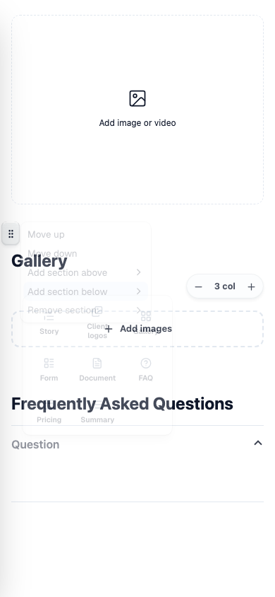
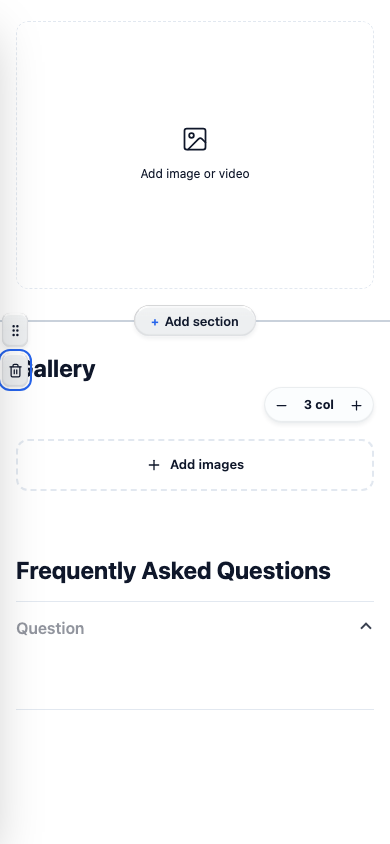

Before: deleting a section means finding the hover-only grip, opening its menu, picking "Remove section" (last item, grey) and then "Confirm remove" in a submenu.
After: a trash button sits in the same left gutter, right under the grip, and shows up whenever the grip does. Click it, then "Remove Gallery". Undo still brings the section back. Nothing is added to the published layout.
All shots come from the PR preview, with throwaway pages that were deleted afterwards. Before is commit a578e6fd and after is commit 78efb1d8.
Desktop 1440: hovering a section
Before. Only the grip appears. Nothing says delete.After. The trash appears under the grip.
Desktop 1440: the delete step
Before. The grip menu, with "Remove section" at the bottom and a submenu still to go. The headless browser does not paint the menu's blur, so it looks more see-through here than it does in Chrome.After. Clicking the trash opens one red confirm, "Remove Gallery".
Hovering the trash turns it red.After confirming, Gallery is gone and FAQ moves up.Undo in the top bar brings Gallery back.Keyboard: Tab from the grip lands on the trash and Enter opens the confirm. Escape leaves the section in place.
Mobile 390
Before. Grip only.

Before. The menu covers the section.

After. Trash under the grip.After. The confirm briefly covers the heading.